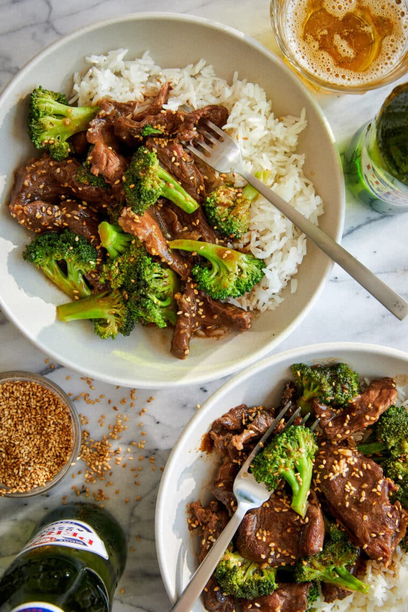

Beef and Broccoli

Description
A Chinese take-out favorite that can be made right in the slow cooker – no
sauteing, no stirring, no frying. It doesn’t get easier than that!
Ingredients
- 1 cup beef broth
- ¼ cup reduced sodium soy sauce
- ¼ cup oyster sauce
- ¼ cup brown sugar
- 1 tablespoon sesame oil
- 3 cloves garlic, minced
- 2 pounds boneless beef chuck roast, thinly sliced
- 2 tablespoons cornstarch
- 2 heads broccoli, cut into florets
Steps
-
In a medium bowl, whisk together beef broth, soy sauce, oyster sauce,
brown sugar, sesame oil and garlic.
-
Place beef into a 6-qt slow cooker. Add sauce mixture and gently toss to
combine. Cover and cook on low heat for 90 minutes.
- In a small bowl, whisk together 1/4 cup water and cornstarch.
-
Stir in cornstarch mixture and broccoli into the slow cooker. Cover and
cook on high heat for an additional 30 minutes.
- Serve immediately.
More Recipes